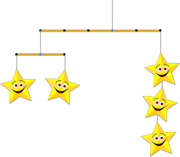

モビールは天井からぶら下げるアートの一種です。寝室にぶら下げられていたものを思い出す人がいるかもしれません。
モビールは棒と形からできています。棒には，形か他の棒を付ける2つの場所があります。そして，棒を上の棒からぶら下げる場所もあります。（いちばん上の棒の場合は，天井からぶら下げることになります。）
下のモビールの例は，次のように数字とカッコを使って表すことができます。
(-3 (-1 1) (1 1)) (2 3)

モビールの棒は回転します。つまり，あるモビールを数字とカッコでの表す方法は1つとは限りません。
次の数字とカッコで表されるモビールはどれでしょう？
(-3 (-1 4) (2 (-1 1) (1 1))) (2 (-1 6) (2 3))
正解は